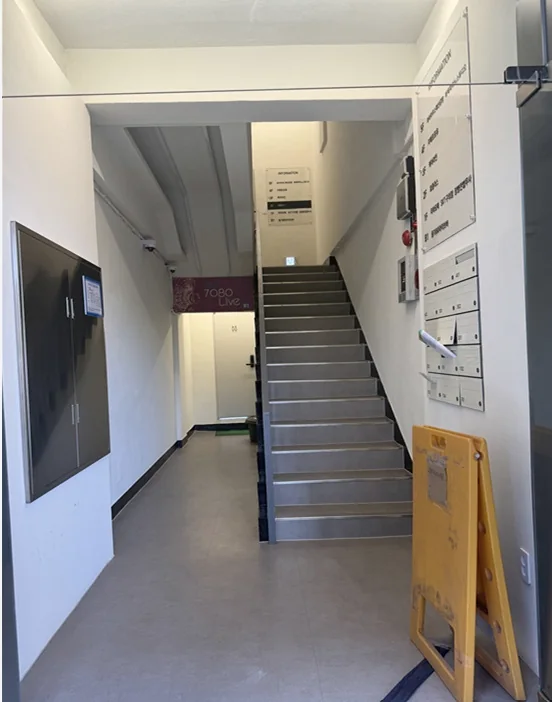
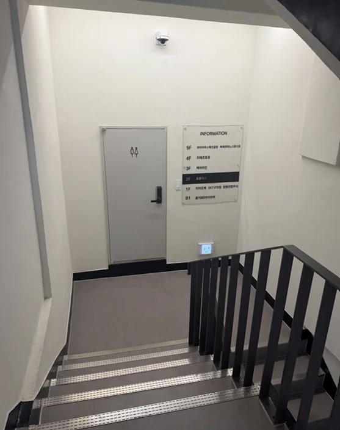
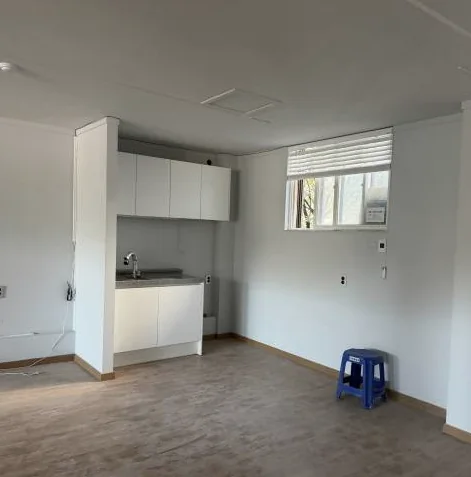
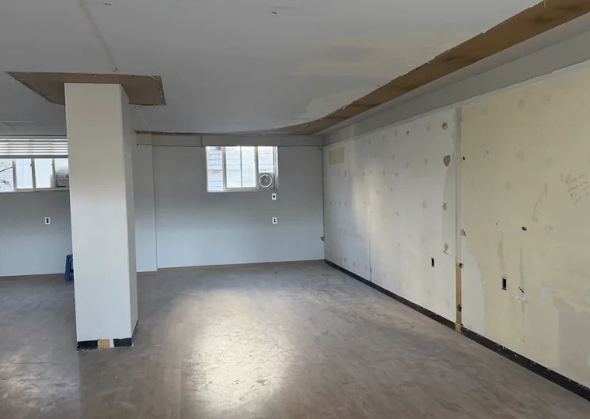
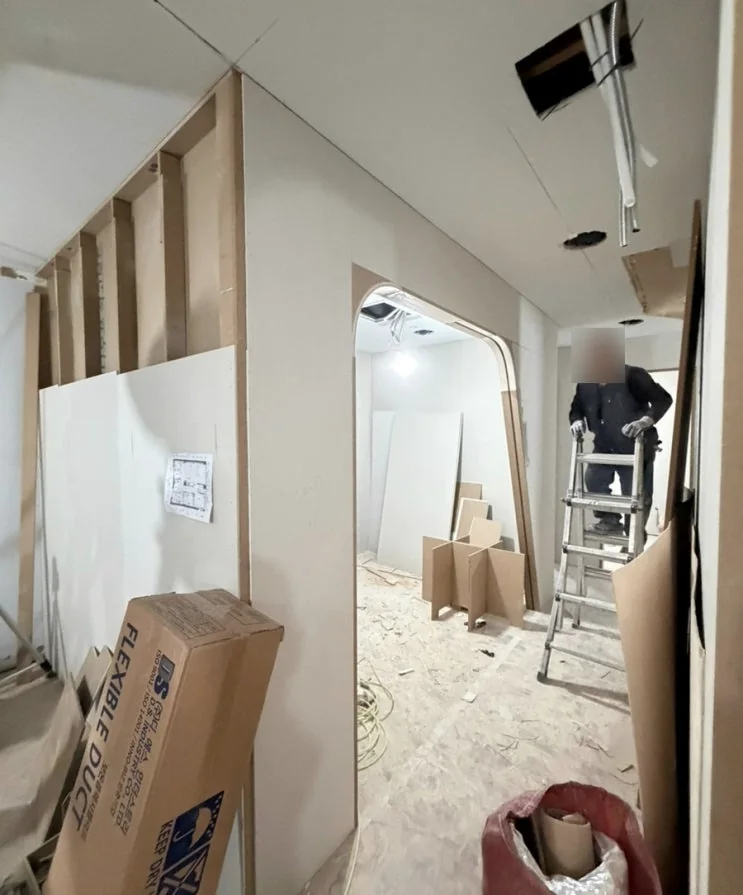

공간
구의역 2번 출구 앞, 장안빌딩 2층에 소율한의원을 만들고 있습니다. 지금은 공사 중이라, 준비하는 모습부터 차례로 올립니다.
준비하는 모습
2026년 11월, 철거를 마치고 목공 공사가 한창입니다. 원장이 블로그 개원일기에 올린 사진이며, 공사가 끝나면 완성된 공간 사진으로 바꿉니다.

장안빌딩 2층2026년 11월, 개원 안내 현수막이 걸렸습니다 
건물 입구1층 입구로 들어와 계단으로 올라옵니다 
2층 계단참한 층만 올라오면 2층입니다 
공사 전싱크대와 장판, 벽지가 그대로 있던 때 
철거 공사11월 초, 모두 뜯어내고 새로 시작했습니다 
목공 공사목공 사흘 만에 원장실·상담실·치료실의 구획이 잡혔습니다
‘예시 이미지’라고 적힌 사진은 분위기를 미리 전하기 위한 그림입니다. 실제 공간 사진으로 바꿔 갑니다.
이 자리를 고른 까닭
강동구, 송파구, 구리시, 성남시까지 한 달 동안 자리를 보러 다닌 끝에 정한 곳입니다.
- 역에서 가깝습니다
- 2호선 구의역 2번 출구에서 걸어서 2분, 건물 바로 앞이 횡단보도입니다. 구의역 이스트폴에서는 그 횡단보도만 건너면 됩니다.
- 동네와 일터 사이에 있습니다
- 뒤로는 주택가가, 앞으로는 회사가 모인 길이 이어집니다. 동네 분들과 근처에서 일하는 분들 모두 편하게 들르실 수 있는 곳이 되었으면 합니다.
- 미리 말씀드릴 것
- 엘리베이터가 없는 2층이고, 오래된 건물이라 건물 안에는 주차할 수 없습니다. 계단을 오르기 어려우시면 오시기 전에 전화 주세요. 차로 오시면 걸어서 3분 거리의 구의1동 공영주차장 요금을 지원해 드립니다.
만들고 있는 공간
약 24평의 아담한 공간입니다.
화려하기보다 깔끔하고, 따뜻하면서도 편안한 곳. 환자분은 편안하게 진료받고, 의료진은 효율적으로 움직일 수 있는 공간을 생각하며 짓고 있습니다.
- 대기실
- 기다리는 시간도 편안하도록.
- 진료실·상담실
- 이야기를 충분히 나눌 수 있도록.
- 검사실
- 필요한 검사를 차분히 받으실 수 있도록.
- 치료실
- 조용하고 편하게 치료받으실 수 있도록.
공간을 예쁘게 채우는 것도 중요하지만, 결국 그곳에서 이뤄질 따뜻한 진료가 본질이겠지요.
장비
진료에 쓰는 장비는 개원에 맞춰 이곳에 소개하겠습니다.
궁금한 점은 편하게 물어봐 주세요
진료시간 안에는 전화로 바로 안내해 드립니다.